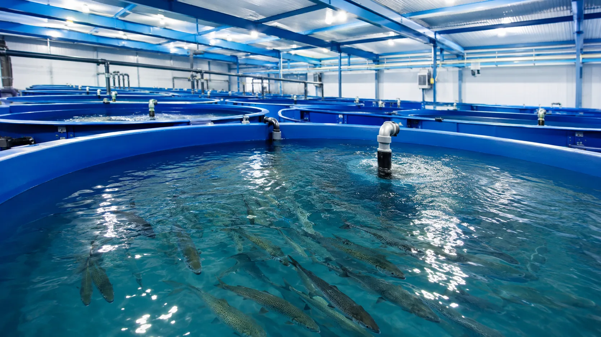

エアレーションとUFBは、どちらも水と気体に関わる技術ですが、目的や使い方は同じではありません。養殖施設では、どちらか一方を選ぶというより、役割を分けて組み合わせる視点が重要です。

エアレーションの役割
エアレーションは、水中に空気を送り込み、酸素供給や水流づくりを行うために使われます。水槽内に気泡を出すため、視覚的にも動きがわかりやすく、既存設備として導入されている現場も多くあります。
一方で、設備によっては電力、騒音、設置スペース、泡の大きさ、水槽内での拡散範囲を確認する必要があります。水槽の形状や水深によって、酸素が届きやすい場所と届きにくい場所が出る場合もあります。
UFBの役割
UFBは、直径1マイクロメートル未満の非常に小さな気泡です。UFB DUALは、配管に組み込み、下流側の水をUFB水として活用するための装置です。
養殖現場では、補給水、循環水、洗浄水などのラインに組み込み、既存のろ過、酸素供給、洗浄設備を補完する技術として検討します。水槽の中だけでなく、施設全体の水の流れを見る点が重要です。
比較するときの見方
- 設置位置
エアレーションは水槽側、UFB DUALは配管側で検討するケースが多くなります。
- 目的
エアレーションは酸素供給や水流づくり、UFB DUALはUFB水生成と水まわり改善の補完が主な目的です。
- 運用条件
電源、ポンプ能力、流量、圧力、清掃頻度、既存設備との干渉を確認します。
置き換えではなく、組み合わせる
エアレーション、酸素供給装置、UV、オゾン、ろ過装置には、それぞれ役割があります。UFB DUALは万能装置ではなく、水処理全体の一部として組み合わせることで、施設に合った導入方法を検討できます。
既存設備を活かしながら、どのラインにUFB DUALを組み込むと管理しやすいかを整理することが、導入検討の第一歩です。